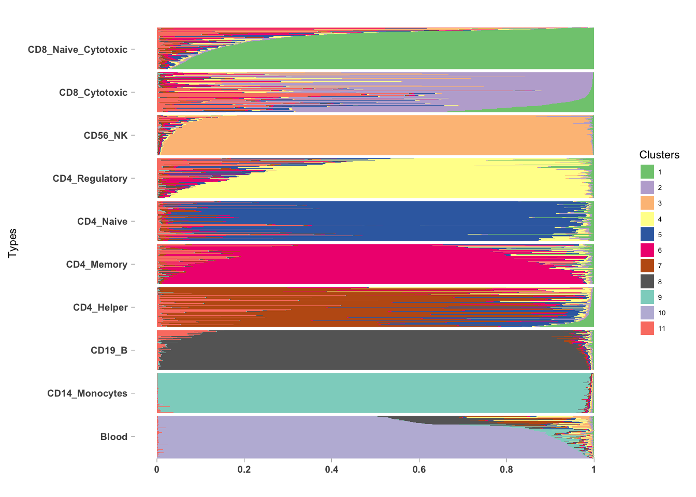

We apply classtpx on the GTEx blood samples (bulk) with the sorted cells information obtained from 10X Genomics.
gtex_expr <- fread("../data/cis_gene_expression.txt")##
Read 0.0% of 16069 rows
Read 62.2% of 16069 rows
Read 16069 rows and 8557 (of 8557) columns from 0.532 GB file in 00:00:11mat1 <- as.matrix(gtex_expr[, -(1:2)])mat <- apply(mat1, 2, function(x) return(rbinom(dim(gtex_expr)[1], x, 1e-05)))samples_id <- read.table("../data/samples_id.txt")
tissue_names <- samples_id[,2]
table(tissue_names)## tissue_names
## Adipose Tissue Adrenal Gland Bladder
## 2 577 145 11
## Blood Blood Vessel Brain Breast
## 511 689 1259 214
## Cervix Uteri Colon Esophagus Fallopian Tube
## 11 345 686 6
## Heart Kidney Liver Lung
## 412 32 119 320
## Muscle Nerve Ovary Pancreas
## 430 304 97 171
## Pituitary Prostate Salivary Gland Skin
## 103 106 57 890
## Small Intestine Spleen Stomach Testis
## 88 104 192 172
## Thyroid Uterus Vagina
## 323 83 96idx1 <- which(tissue_names == "Blood")
mat2 <- mat[, idx1]gene_names <- as.character(read.table("../data/gene_names_GTEX_V6.txt")[,1])
gene_names_1 <- as.character(sapply(gene_names, function(x) return(strsplit(x, "[.]")[[1]][1])))We convert these ensembl IDs to gene names.
out <- mygene::queryMany(gene_names_1, scopes="ensembl.gene", fields=c("symbol", "ensembl.gene"), species="human");## Querying chunk 1## Querying chunk 2## Querying chunk 3## Querying chunk 4## Querying chunk 5## Querying chunk 6## Querying chunk 7## Querying chunk 8## Querying chunk 9## Querying chunk 10## Querying chunk 11## Querying chunk 12## Querying chunk 13## Querying chunk 14## Querying chunk 15## Querying chunk 16## Querying chunk 17## Finished
## Pass returnall=TRUE to return lists of duplicate or missing query terms.idx2 <- match(out$query, gene_names_1)
gene_names_2 <- out$symbol[idx2]data_build <- t(mat2)
colnames(data_build) <- gene_names_2common_genes <- intersect(colnames(data_build), rownames(sorted_data))
data_build_2 <- data_build[, match(common_genes, colnames(data_build))]
sorted_data_2 <- sorted_data[match(common_genes, rownames(sorted_data)),]pooled_data <- rbind(t(sorted_data_2), data_build_2)We build the classifier now.
topic_clus <- classtpx::class_topics(pooled_data, K=9, known_samples = known_samples, class_labs = class_labs_2, method = "theta.fix", shrink = FALSE, tol = 0.001, ord=FALSE)##
## Estimating on a 5011 document collection.
## start the fit
## log posterior increase: 862.975, done.save(topic_clus, file = "../output/classtpx_gtex_blood_sorted_immune_thresh.rda")topic_clus <- get(load("../output/classtpx_gtex_blood_sorted_immune_thresh.rda"))topic_clus_2 <- get(load("../output/classtpx_gtex_blood_sorted_immune_thresh_2.rda"))
This R Markdown site was created with workflowr